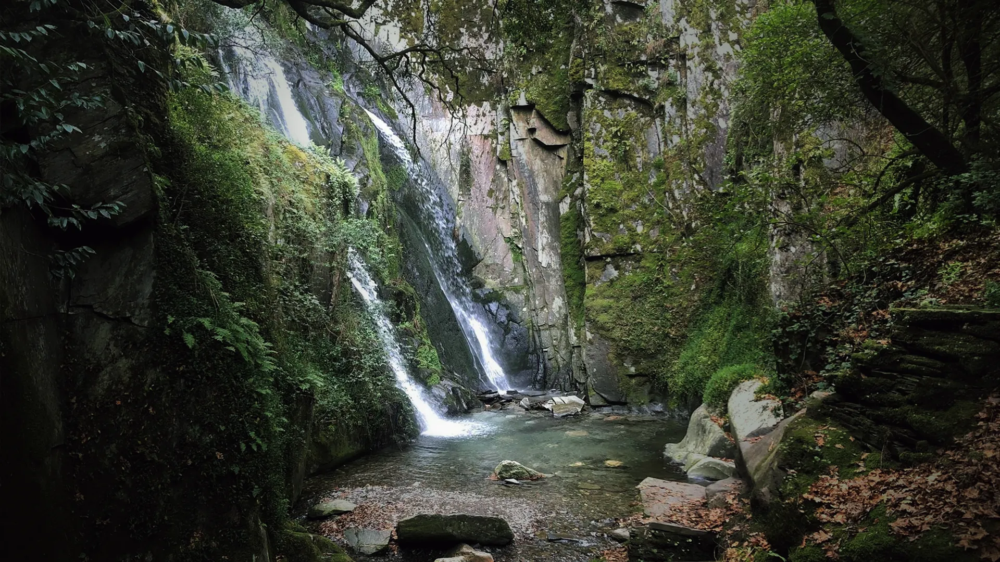

Fraga
da pena
Fraga da Pena is the result of a geological feature that created a series of waterfalls along a permanent watercourse, the Barroca de Degraínhos.

Fraga da Pena is the result of a geological feature that created a series of waterfalls along a permanent watercourse, the Barroca de Degraínhos.